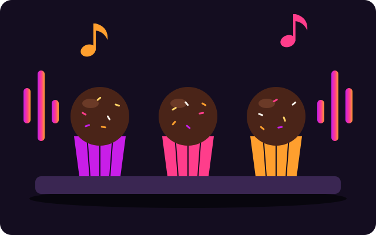

Doce Melodia
Cada doce tem a sua trilha.
Seja bem-vindo à Doce Melodia! Aqui, cada doce é feito à mão com ingredientes selecionados e saboreado ao som de bandas parceiras. Entre, escolha o seu favorito e descubra uma música nova enquanto adoça o seu dia.
Conheça a Doce Melodia Fale com o bot-Amargo
Doces feitos à mão, música feita por quem a ama
Nossa confeitaria une sabor e cultura em um só ambiente. Os doces são artesanais, e a trilha sonora da loja é tocada por bandas parceiras, que ganham um palco extra para mostrar o seu trabalho.